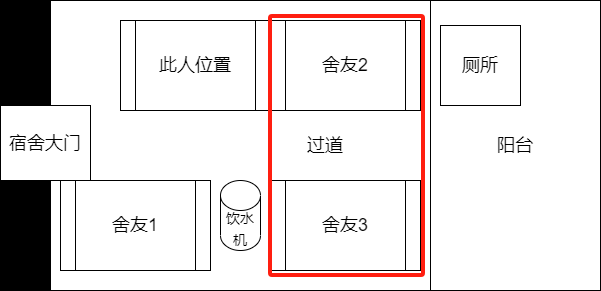

广东药科大学变态男子
视频4.2：此视频分为两个视频，视频左上角可以看到具体时间，可以看出舍友前脚去上厕所（第一个），他后脚迫不及待地就跑到其他舍友的位置上去了（第二个），如果理解不了，可以看一下宿舍位置的分布图（在最后红框圈出的部分）。也就是说，他跑到了另外两个舍友所处的区域（其他两个舍友均不在宿舍）。
Your browser does not support the video tag.
Your browser does not support the video tag.
宿舍位置分布图（俯视图）：
